OK153-S_Linux5.10.198_User’s Compilation Manual_V1.0
Document classification: □ Top secret □ Secret □ Internal information ■ Open
Copyright
The copyright of this manual belongs to Baoding Folinx Embedded Technology Co., Ltd. Without the written permission of our company, no organizations or individuals have the right to copy, distribute, or reproduce any part of this manual in any form, and violators will be held legally responsible.
Forlinx adheres to copyrights of all graphics and texts used in all publications in original or license-free forms.
The drivers and utilities used for the components are subject to the copyrights of the respective manufacturers. The license conditions of the respective manufacturer are to be adhered to. Related license expenses for the operating system and applications should be calculated/declared separately by the related party or its representatives.
Overview
This manual is designed to help you quickly understand the compilation process and become the compilation methods. Applications need to be cross-compiled on an Ubuntu host before they can run on the development board. By following the methods in this compilation manual and through hands-on practice, you can successfully compile your own software code.
The manual will explain the environment setup process. Some unpredictable issues may arise during environment setup, so it is recommended that beginners directly use the pre-configured development environment Forlinx provide to get started quickly and reduce development time.
There are there installation methods: dual-boot on a physical machine, single-boot on a physical machine, or in a virtual machine. Each installation method has its advantages and disadvantages. This manual only provides a method for setting up Ubuntu in a virtual machine.
Hardware requirements: It is recommended to have at least 16 GB of RAM or more. This ensures that after allocating memory for the virtual machine (it is recommended to allocate over 10 GB for the virtual machine), you can still perform other operations on Windows without significant lag.
There are total 4 chapters:
Chapter 1. covers the installation of virtual machine software, briefly introducing the download and installation of VMware;
Chapter 2. covers loading the Ubuntu system Forlinx provide;
Chapter 3. covers setting up and configuring the Ubuntu system, installing necessary tools, and addressing common issues with the development environment;
Chapter 4. covers the materials needed for source code compilation, SDK compilation, configuration of the Qt compilation environment, and program compilation methods.
Application Scope
This software manual is designed for the OK153-S platform running Linux5.10. While other platforms may also reference this manual, there could be differences that require adjustments for the specific use.
Revision History
Date |
Version |
Revision History |
|
|---|---|---|---|
24/09/2025 |
V1.0 |
User’s Compilation Manual Initial Version |
1. VMware Virtual Machine Software Installation
This chapter mainly introduces the installation of the VMware virtual machine, using VMware Workstation 15 Pro v15.5.6 as an example to demonstrate the operating system installation and configuration process.
1.1 Downloading and Purchasing VMware Software
Visit the VMware official website at https://www.vmware.com/cn.html to download Workstation Pro and obtain the product key. VMware is paid software that requires individual purchase, or you can choose to use a trial version.
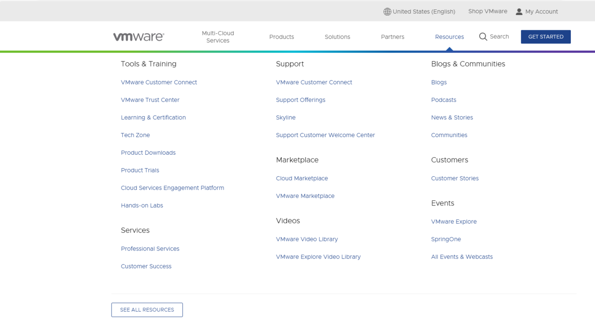
After the download is complete, double-click the setup file to launch the installer.
1.2 VMware Software Installation
Double-click the setup file to enter the installation wizard.
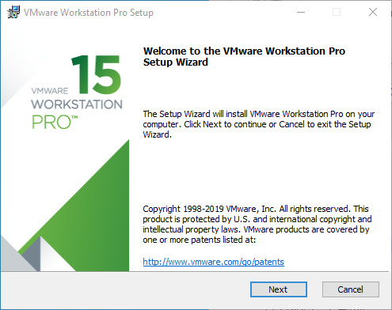
Click “Next.”
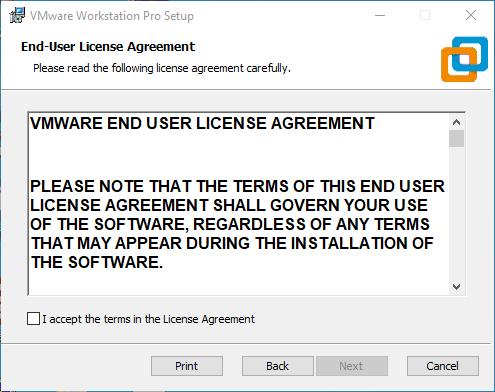
Check “I accept the terms in the license agreement” and click “Next.”
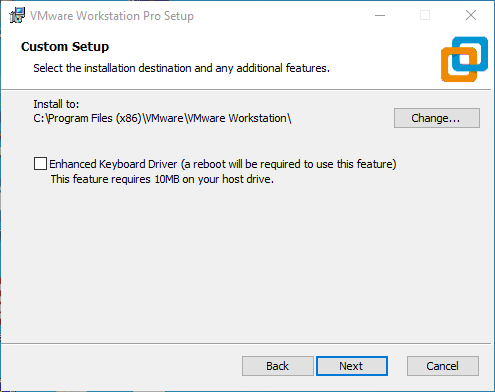
Modify the installation location to the partition on your computer where software is typically installed, then click “Next.”
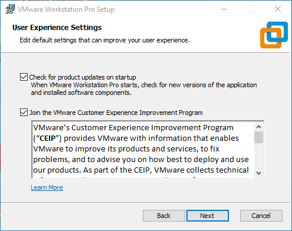
Check, then click “Next.”
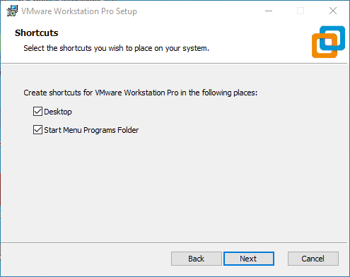
Check “Add shortcuts” and click “Next.”
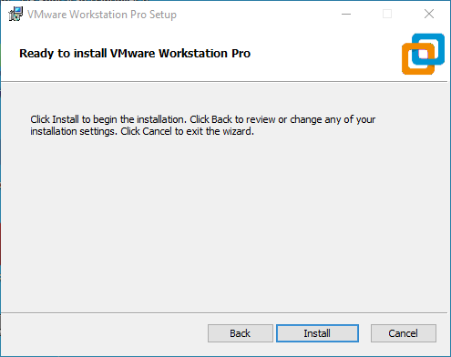
Click “Install.”
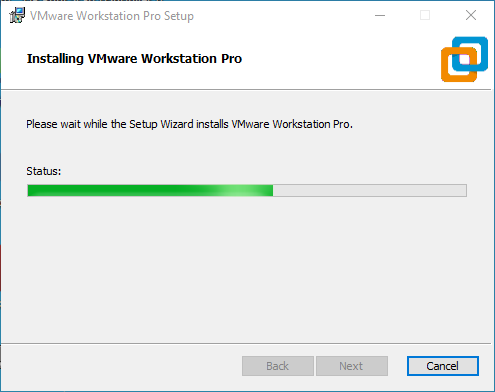
Wait for the installation to complete.
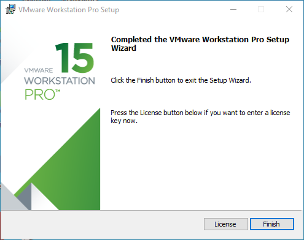
After clicking “Finish,” you can start the trial. For long-term use, please purchase from the official website and enter the license key.
2. Loading an Existing Ubuntu Development Environment
Note:
It is recommended that beginners directly use the virtual machine environment pre-configured by Forlinx, which already has the cross-compiler and Qt environment installed. After reviewing this chapter, you can skip directly to the compilation chapters;
The provided development environment has a regular user account: forlinx, with password: forlinx. The superuser account is: root, with password: root;
You can access software and hardware documentation, source code, and the development environment via the cloud storage link provided by Forlinx. Please ask your sales representative for the download link.
There are two ways to use the virtual machine environment in VMware: one is to directly load an existing environment, and the other is to create a new environment. First explain how to load an existing environment.
First, download the development environment provided by Forlinx. The development environment package includes an MD5 checksum file. After downloading the package, you should verify the integrity of the compressed file by performing an MD5 checksum check. You can either use an online MD5 verification tool or download a dedicated MD5 verification tool, depending on your preference. Compare the checksum that you generate with the one listed in the checksum file. If they match, the downloaded file is intact. If they do not match, the file may be corrupted, and you will need to download it again.
Select all the compressed packages and right click to extract them to the current folder or your own directory:
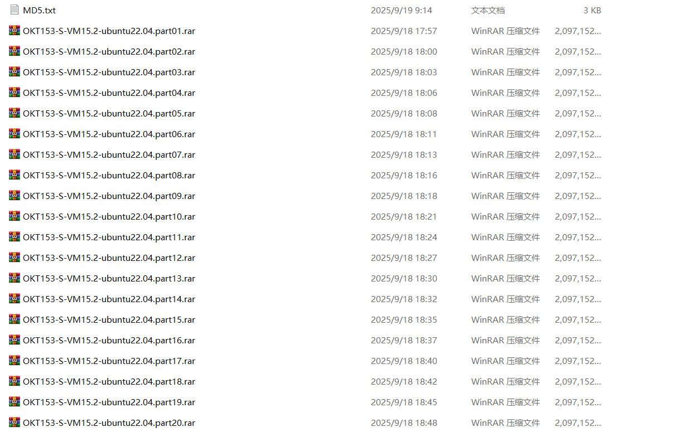
After extraction, you will obtain the development environment folder OKT153-S-VM15.2-ubuntu22.04.
The OKT153-S.vmx file located in the OKT153-S-VM15.2-ubuntu22.04 folder is the one that the virtual machine will open.
Open the installed virtual machine software.
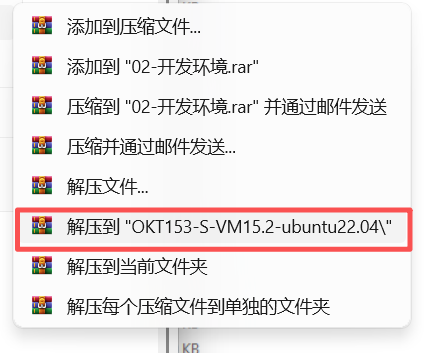
Select the directory where the newly extracted OKT153-S-VM15.2-ubuntu22.04 virtual machine file is located, and double-click the startup file to open it.
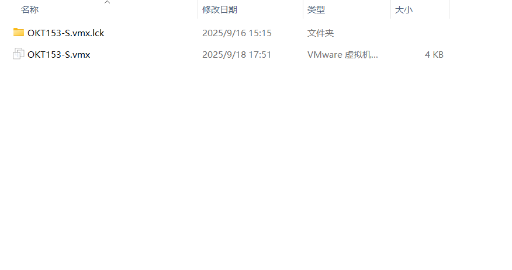
After loading, click “Power on this virtual machine” to run it and enter the system interface.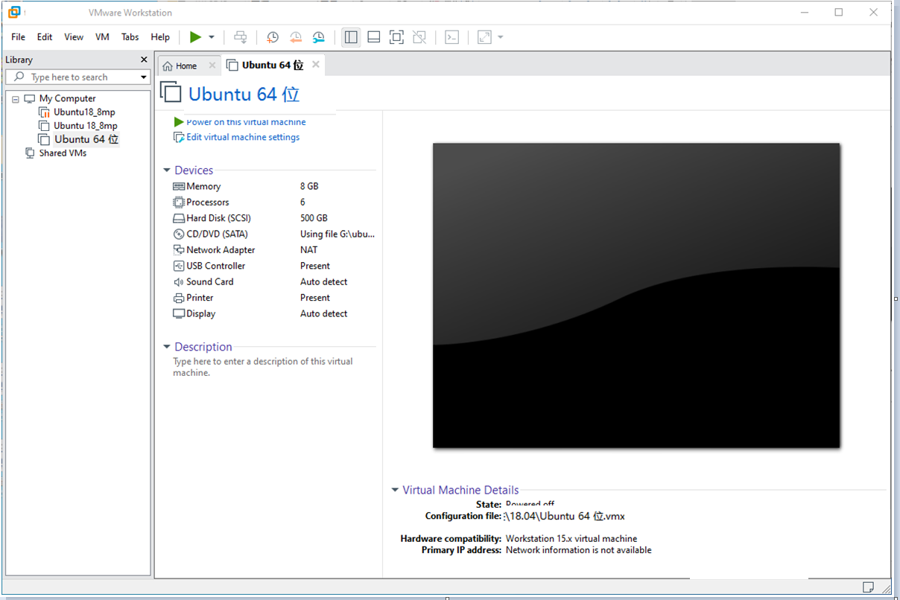
The provided development environment is set to automatically log in to the account forlinx on startup by default.
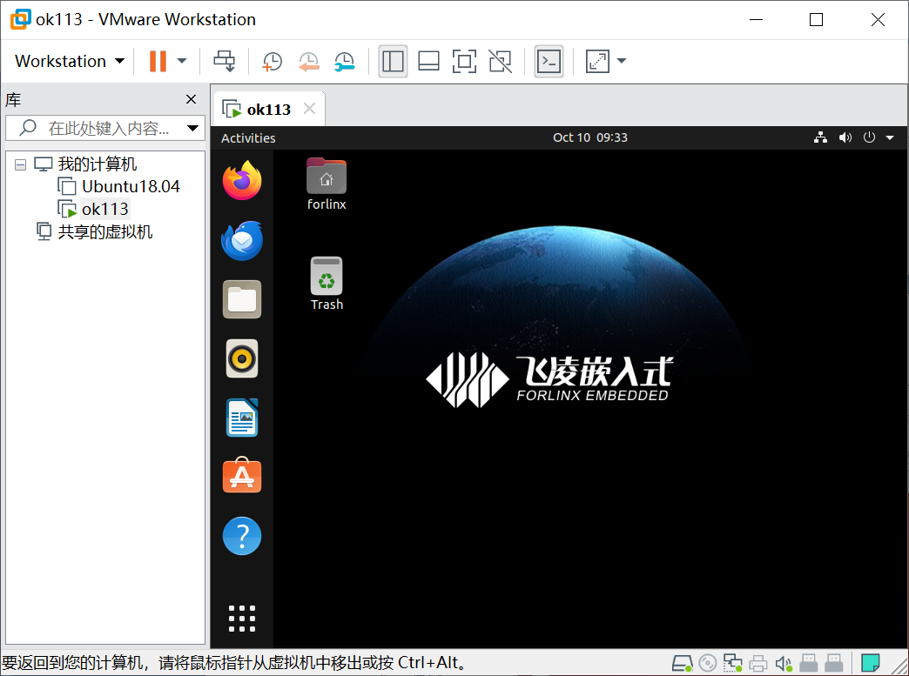
3. Setting Up a New Ubuntu Development Environment
Note: For beginners, it is not recommended to build the system from scratch. Instead, it’s advisable to utilize the provided virtual machine environment. Therefore, this section can be skipped if there is no need to set up a custom build environment.
This chapter mainly explains the setup process of the Ubuntu system and the installation of Qt Creator. If QT is not used, the installation of Qt Creator can be ignored.
3.1 Ubuntu System Setup
The installed Ubuntu version is 22.04, and all the introductions and development in this manual were carried out on Ubuntu 22.04. First, go to the Ubuntu official website to obtain the Ubuntu 22.04 64-bit image. The download address is: Ubuntu 22.04.5 LTS (Jammy Jellyfish)http://releases.ubuntu.com/20.04/)
Download “ ubuntu-22.04.5-desktop-amd64.iso” (you can download the version based on your own needs).
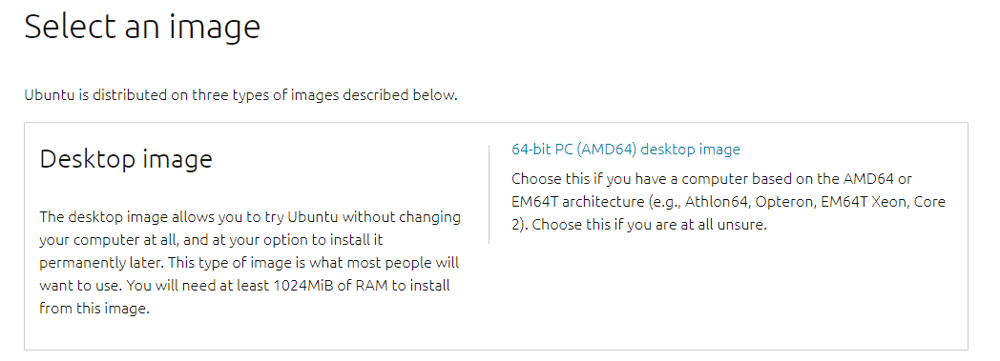
3.1.1 Creating an Ubuntu Virtual Machine
Step 1: Open the VMware software and click “Create a New Virtual Machine”. On the following screen, check “Custom (advanced)” and click “Next”:
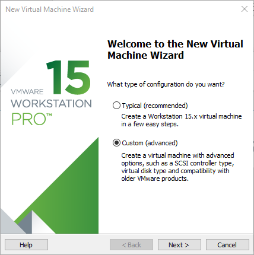
Step 2: Select the compatibility for the corresponding VMware version (you can view the version under Help -> About VMware Workstation). After confirming, click “Next”:
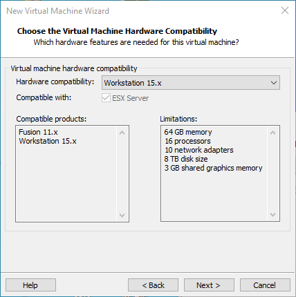
Choose “Installer disc image file (iso)” and click “Next”:
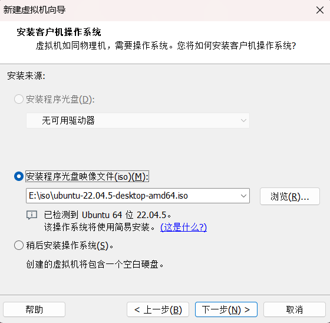
Enter the full name, username, and password, then click “Next”:
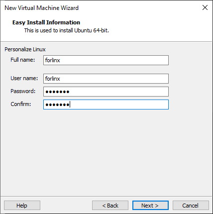
Enter the virtual machine name and configure the installation location, then click “Next”:
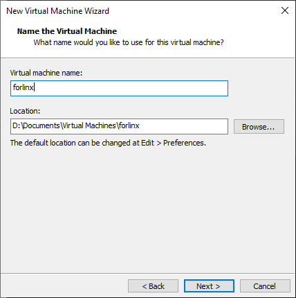
Configure the number of cores, then click “Next”:
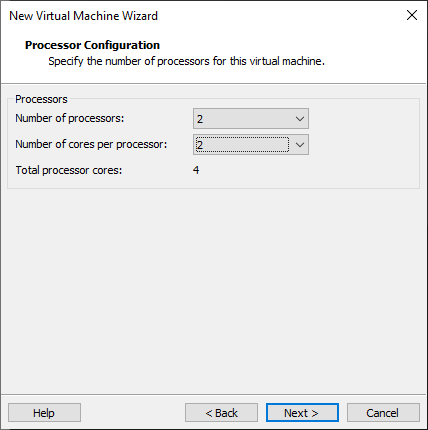
Configure at least 8GB of memory and select “Next”:
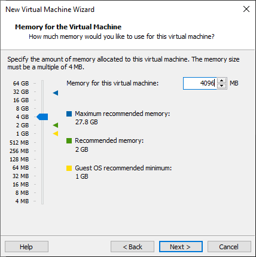
Set the network type, use the default NAT networking, and click “Next”. Subsequent steps remain at their default values until the disk capacity step is specified.
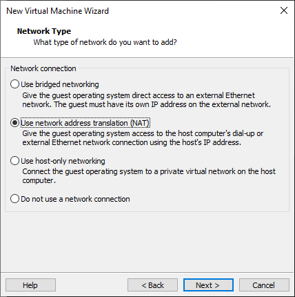
Use the recommended I/O controller and click “Next”:
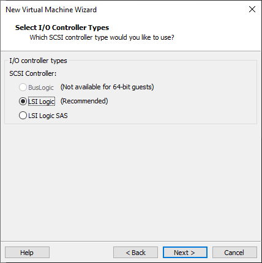
Use the recommended disk type and click “Next”:
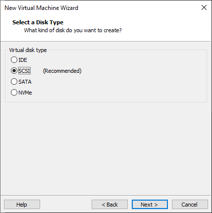
Use the default option, “Create a new virtual disk”, and click “Next”:
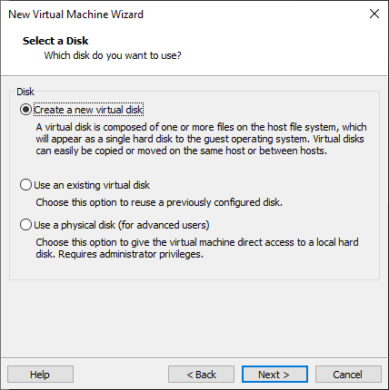
Allocate a disk space of 80GB or more and divide the virtual disk into multiple files, then click “Next”:
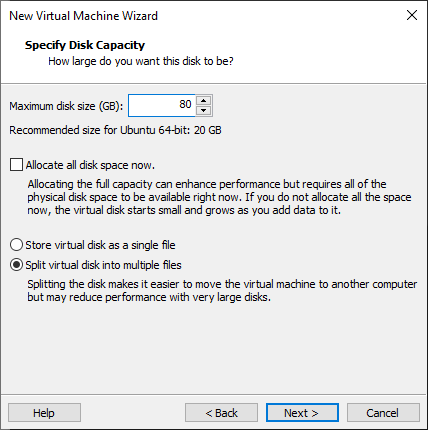
Use the default settings and click “Next”:
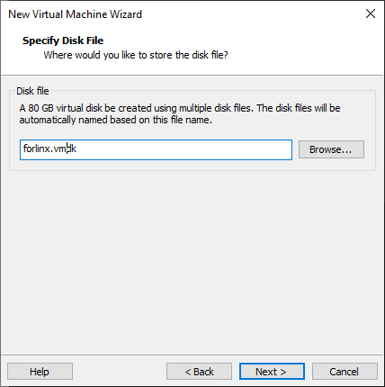
Click “Finish”:
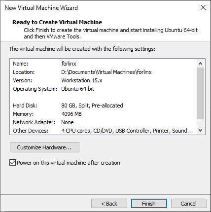
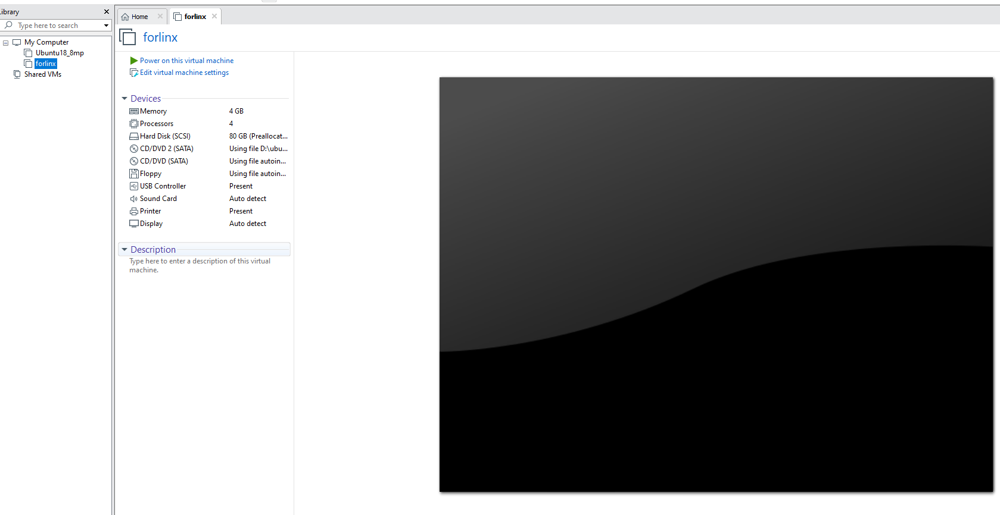
At this point, the virtual machine creation is complete.
Afterward, click “Power on this virtual machine” to start installing the image. Please wait patiently.
With the above, the Ubuntu system installation is complete.
3.1.2 Basic Configuration of Ubuntu
3.1.2.1 VMware Tools Installation
VMware Tools should be installed automatically after creating the virtual machine. If it is not successful, install it according to the following steps.
Without this tool installed, you cannot use copy and paste or drag and drop files between the Windows host and the virtual machine.
First, click “Virtual Machine” on the VMware navigation bar, then click “Install VMware Tools” in the dropdown menu.
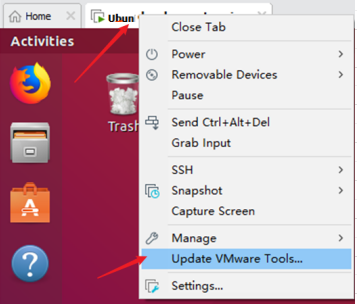
After that, enter Ubuntu. A VMware Tools CD will appear on the desktop; click to enter it.
Once entering, you will see a compressed file VMware Tools-10.3.10-12406962. tar. gz (different virtual machine versions may be different), and copy the file to the home directory (that is, the directory of the home personal user name).

Press [Ctrl+Alt+T] to bring up the terminal command interface and enter the command to extract it:
forlinx@ubuntu:~$ sudo tar xvf VMwareTools-10.3.10-12406962.tar.gz
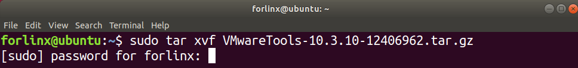
After extraction, a folder named “vmware-tools-distrib” will appear.
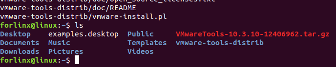
Return to the terminal and type: cd vmware-tools-distrib to enter the directory.
Then type: sudo ./vmware-install.pl and press Enter. Enter your password and the installation will begin. When prompted, type yes; otherwise, just press Enter to install the default settings.
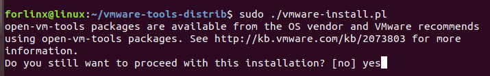
After VMware Tools installation is complete, file copy-paste between Windows and Ubuntu will be enabled.
3.1.2.2 Virtual Machine Full-Screen Display
If the virtual machine cannot display in full screen, you can click on “View”, select “Auto-Adjust Size”, and then click “Autofit Guest” to resolve the full-screen issue.
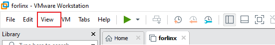
Most system settings can be configured in the location shown in the figure. Many settings requirements on Ubuntu can be completed here.
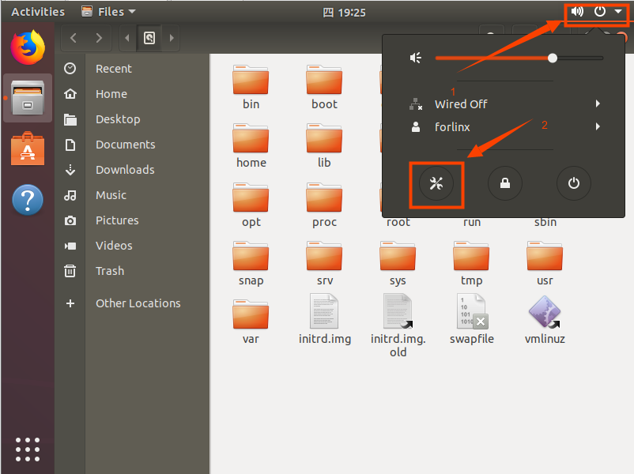
3.1.2.3 Virtual Machine Sleep Settings
Additionally, the default sleep setting is 5 minutes. If you do not want the system to go to sleep, go to Settings -> Power -> Blank Screen and set it to “Never”.
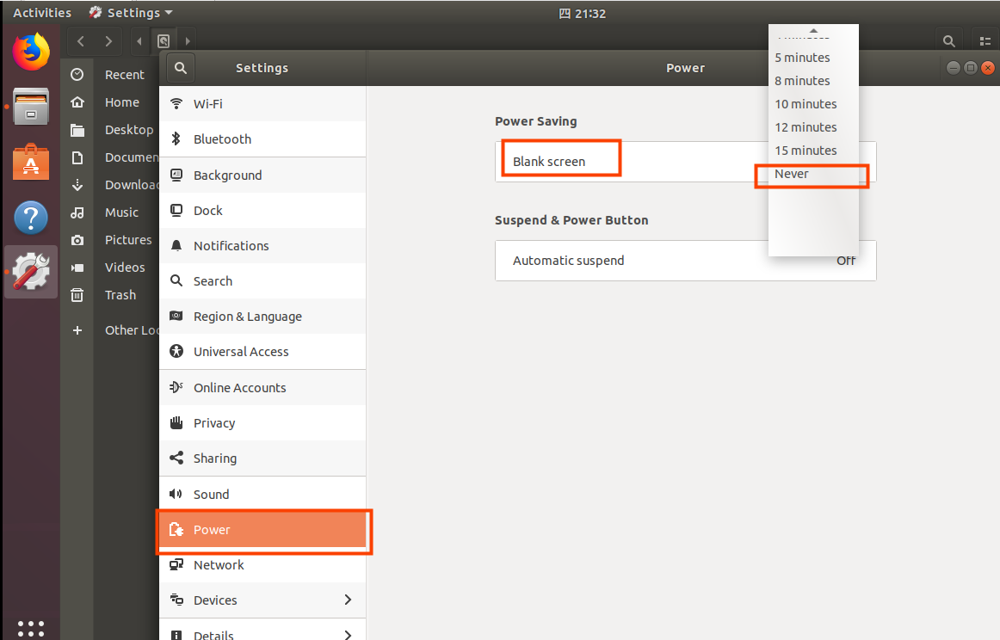
3.1.3 Virtual Machine Swapfile Configuration
The virtual machine was allocated 8GB of memory when it was created, but 8GB of memory was not enough during the compilation process, so the size of the swapfile needed to be modified.
forlinx@ubuntu:~$ sudo swapoff /swapfile
forlinx@ubuntu:~$ sudo dd if=/dev/zero of=/swapfile bs=1M count=16384
forlinx@ubuntu:~$ sudo mkswap /swapfile
forlinx@ubuntu:~$ sudo swapon /swapfile
3.1.4 Virtual Machine Network Configuration
3.1.4.1 NAT Connection Mode
By default, after the virtual machine installation is complete, the network connection mode is set to NAT, as shown in the figure below, sharing an IP address with the host machine. This setting does not need to be changed when installing dependency packages, compiling code, etc.
In the virtual machine, when the VMware virtual network adapter is set to NAT mode, the network in the Ubuntu environment should be set to dynamic IP. In this mode, the virtual NAT device connects and communicates with the network card of host for internet access. This is the most commonly used method for the virtual machine to access the external network.
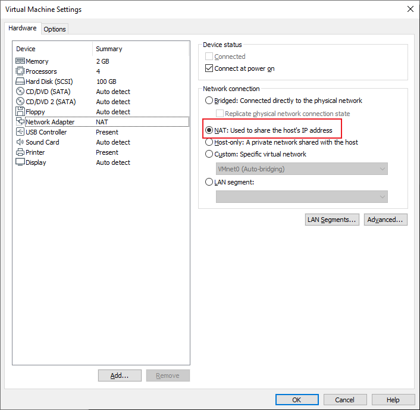
3.1.4.2 Bridged Connection Mode
When the VMware virtual network adapter device is in bridged mode, the host network card and the virtual machine network card communicate through a virtual network bridge. In the Ubuntu environment, you need to set a network IP in the same subnet as the host. To access the external network, you need to set the DNS to be consistent with the host network card. When using servers like TFTP or SFTP, you need to set the network connection method of the virtual machine to bridged mode.
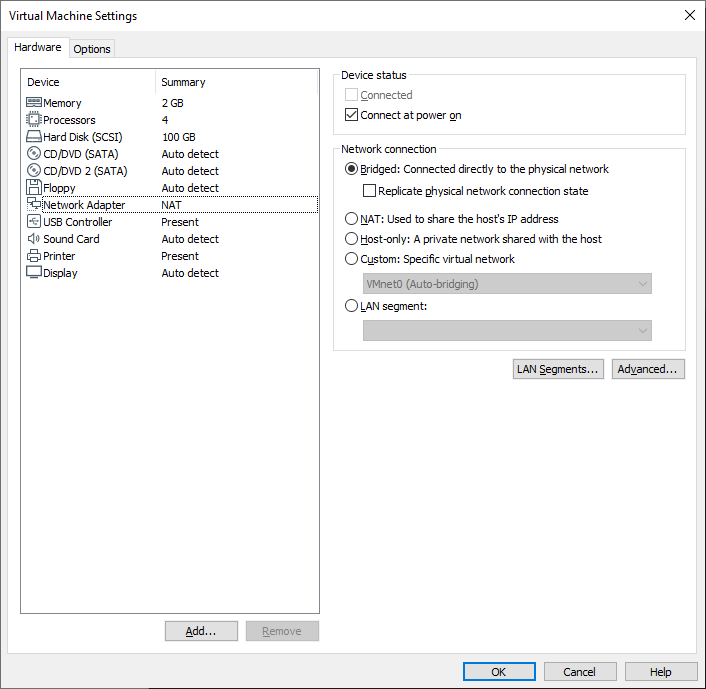
3.2 Installing Toolkits
To install the necessary toolkits required for compiling OKT153, please execute the following commands. Ensure the network is functioning normally and can access the external internet before installation:
forlinx@ubuntu:~$ sudo apt-get update
forlinx@ubuntu:~$ sudo apt-get install openssh-server vim git fakeroot make automake \
autoconf libtool libssl-dev bc dosfstools mtools parted iproute2 kmod \
libyaml-dev device-tree-compiler python flex bison build-essential \
u-boot-tools libncurses-dev lib32stdc++6 lib32z1 libc6:i386
3.3 Qt Creator Installation
Path: OKT153-S (Linux) User Profile\Tools\qt-opensource-linux-x64-5.12.9.run
Copy qt-opensource-linux-x64-5.12.9.run to any directory under the current user’s home directory, and execute:
forlinx@ubuntu:~$ chmod 777 qt-opensource-linux-x64-5.12.9.run
forlinx@ubuntu:~$ ./qt-opensource-linux-x64-5.12.9.run
The following interface will pop up. Click “Next” to enter the next step:
Click “Next”:
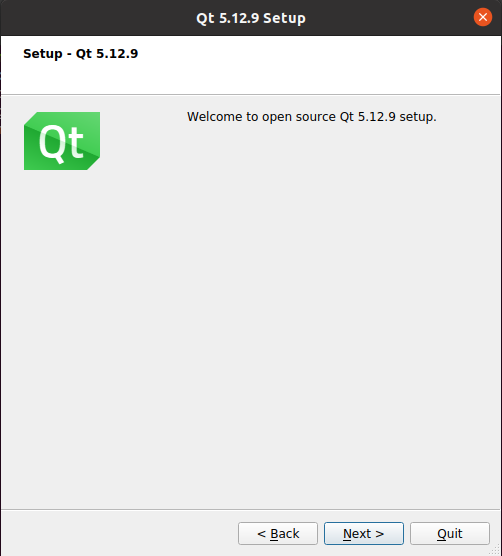
If the following screen appears, you can continue the installation by disconnecting network services.
In the following screen, click “Browse …” Select the installation path of Qtcreator, and then click “Next” to enter the next step:
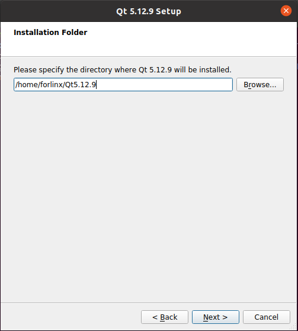
Click “Next”:
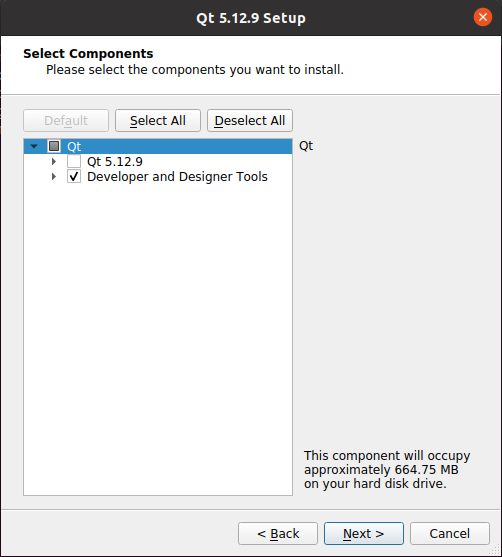
Agree to the license agreement and click “Next”:
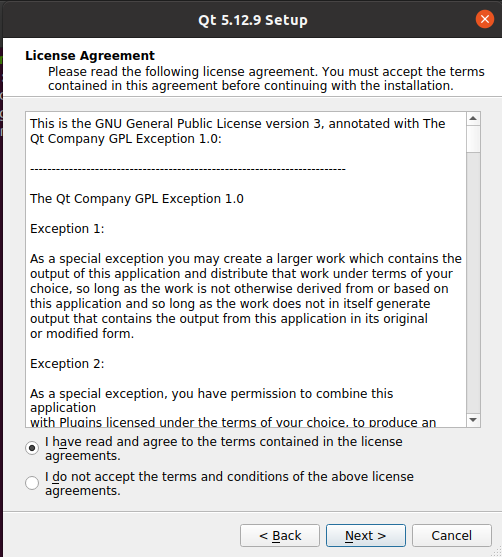
Click “Install”:
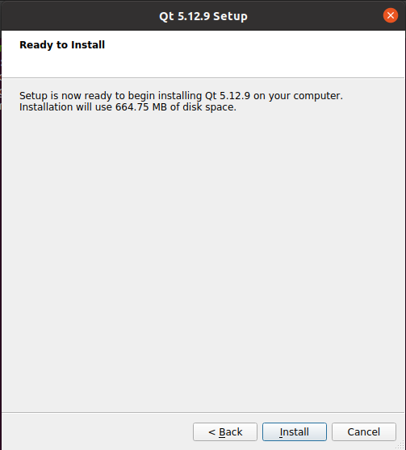
After the installation is completed, the following interface will be displayed. Uncheck the option “Launch Qt Creator” “and click “ Finish” to complete the installation of Qt Creator:
Navigate to the actual Qt Creator installation directory: /home/forlinx/Qt5.15.8/Tools/QtCreator/bin/
forlinx@ubuntu:~$ cd /home/forlinx/Qt5.15.8/Tools/QtCreator/bin/
Start Qt Creator:
forlinx@ubuntu: ~/Qt5.15.8/Tools/QtCreator/bin $ sudo ./qtcreator
[sudo] password for forlinx: forlinx //输入forlinx用户的密码，无回显
QStandardPaths: XDG_RUNTIME_DIR not set, defaulting to '/tmp/runtime-root'
QStandardPaths: XDG_RUNTIME_DIR not set, defaulting to '/tmp/runtime-root'
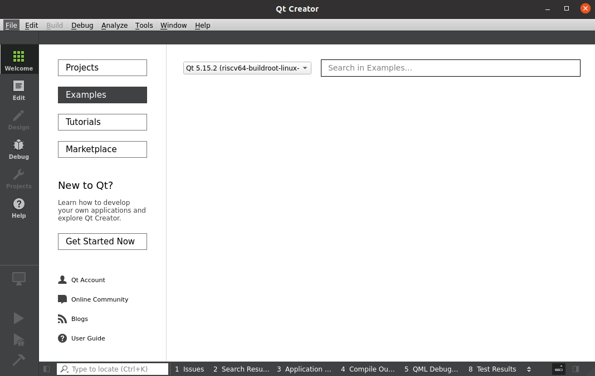
The Qt Creator tool interface will appear. Qt Creator installation is now complete.
3.4 Qt Compilation Environment Configuration
Path: User Information-Software Information \ 3-Tools \ \arm-buildroot-linux-gnueabi_sdk-buildroot-emmc.tar.gz
The libraries and cross-compilation tools required to compile Qt programs are located in arm-buildroot-linux-gnueabi_sdk-buildroot-emmc.tar.gz.The configuration steps are as follows:
Extract the compilation environment archive
Because the qmake tool depends on a local path, this toolkit must be placed in a fixed path: /opt/
Extract the toolkit.
forlinx@ubuntu:~$ sudo tar -xf arm-buildroot-linux-gnueabi_sdk-buildroot-emmc.tar.gz -C /opt/
forlinx@ubuntu:~$ cd /opt/arm-buildroot-linux-gnueabi_sdk-buildroot
forlinx@ubuntu: /opt/arm-buildroot-linux-gnueabi_sdk-buildroot $ ./relocate-sdk.sh
2. Qt Creator Environment Configuration
First, open the Qt Creator software.
Enter the actual installation directory of Qt Creator/home/forlinx/Qt5.15.8/Tools/QtCreator/bin/directory：
Execute:
forlinx@ubuntu:~$ cd /home/forlinx/Qt5.15.8/Tools/QtCreator/bin/
Start Qt Creator:
forlinx@ubuntu: ~/Qt5.15.8/Tools/QtCreator/bin $ sudo ./qtcreator
[sudo] password for forlinx: forlinx //Enter the password for the forlinx user; no display.
QStandardPaths: XDG_RUNTIME_DIR not set, defaulting to '/tmp/runtime-root'
QStandardPaths: XDG_RUNTIME_DIR not set, defaulting to '/tmp/runtime-root'
Start the Qt Creator program and click Tools- > option:
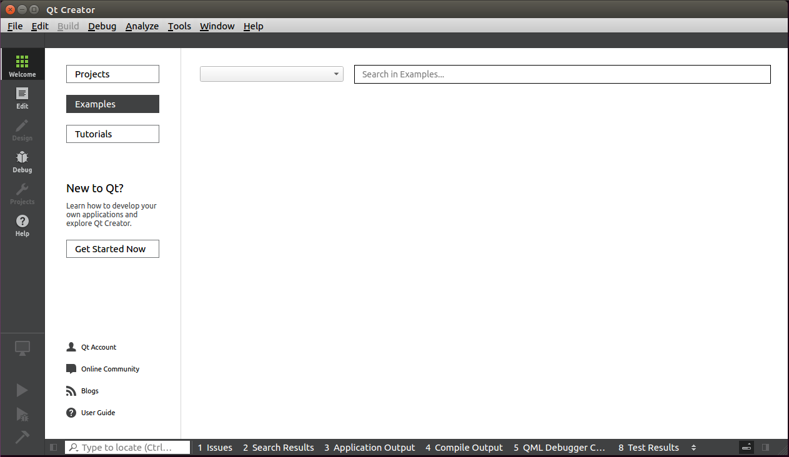
Enter the Options interface, click “Kits” on the left, then click the “Compilers” tab on the top of the middle, and click “Add-> GCC-> C + +” on the right, as shown in the figure:
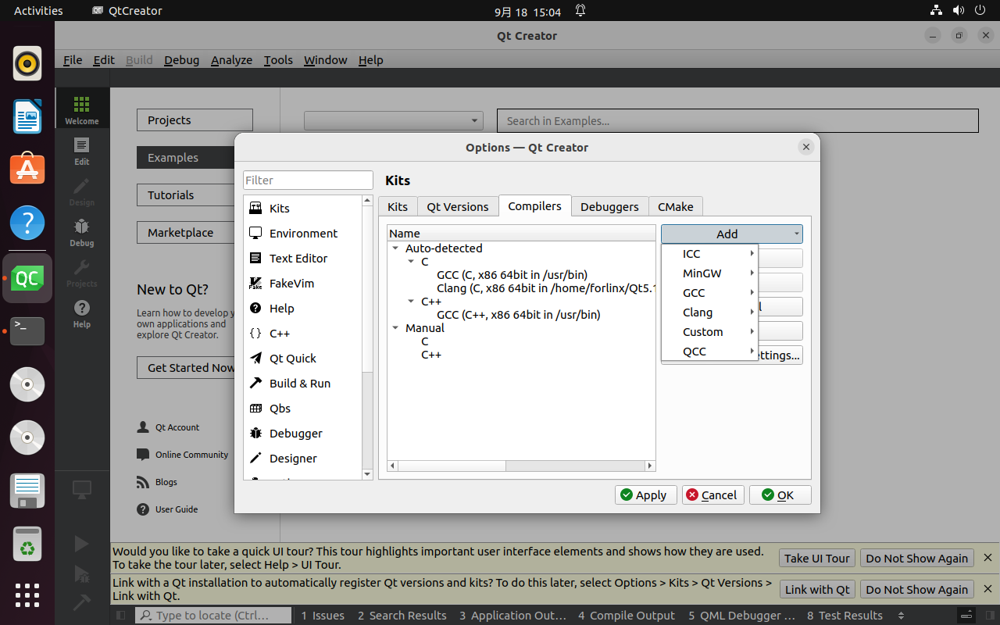
Find “arm-linux-gnueabihf-g++”” under /opt/arm-buildroot-linux-gnueabi_sdk-buildroot/bin/, select it and click “Open“. Then modify the Name
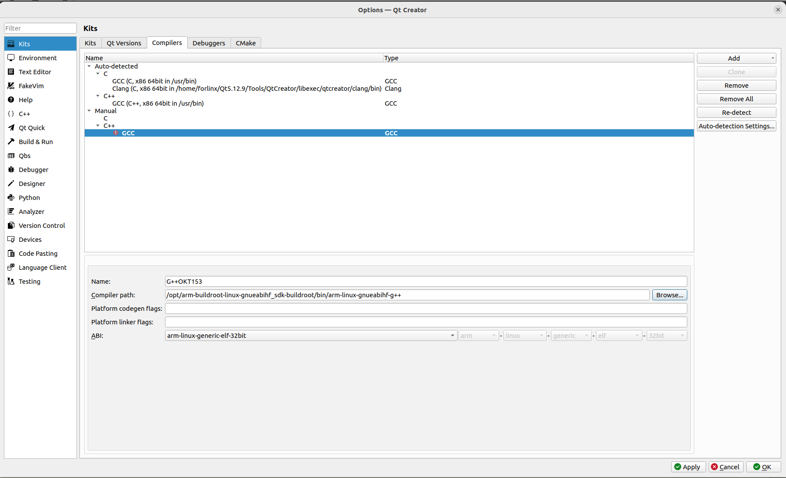
Add the GCC compiler using the same method, and click “Add->GCC->C” on the right, as shown in the image:
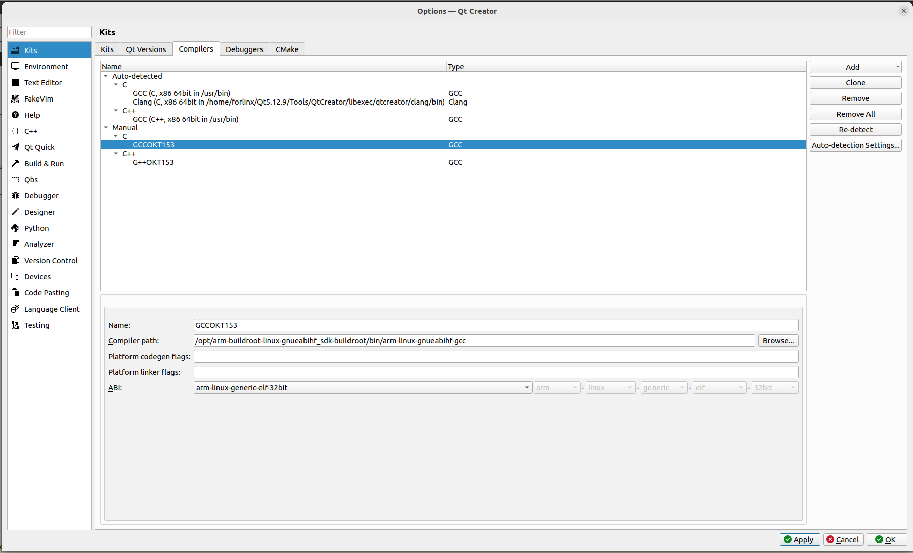
Find “arm-linux-gnueabihf-gcc” under /opt/arm-buildroot-linux-gnueabi_sdk-buildroot/bin/, select it and click Open. Then modify the Name.
Click the “Qt Versions” tab, then click “Add”:
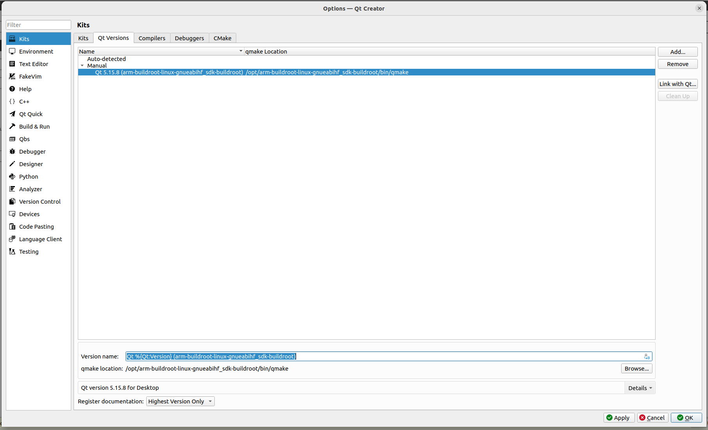
Find “qmake” under /opt/arm-buildroot-linux-gnueabi_sdk-buildroot/bin/, select it, and then click “Open”. The following will be displayed, and click “Apply”.
Click the “Kits” tab, click “Add” on the right to add a new Kit. Modify the contents according to the figure below and click “Apply”.
3.5 VMware Error Solutions
Error 1: Unable to connect to MKS: Too many socket connection attempts; giving up.
Solution:
My Computer -> Right-click -> Manage -> Services and Applications -> Services: Start all VMware-related services.
After the services start successfully, restart the virtual machine; or suspend the virtual machine first, then after the services start, resume the suspended virtual machine.
Error 2: Internal Error
Solution: Refer to Solution 1
Error 3: Unable to install the VMware Authorization Service (VMAuthdService)
Solution:
win+R
Enter services.msc
Then find the service and start it because this service is used for authorization and authentication to start and access virtual machines.

The WMI service must be started first.
Error 4: Failed to install the hcmon driver
Solution: Delete C:\Windows\System32\drivers\hcmon.sys, then reinstall.
Error 5: Intel VT-x is disabled
Solution:
① Enter the BIOS interface during startup (F2 or F12);
② Configuration -> Intel Virtual Technology -> Change from Disabled to Enabled -> Save settings and exit to restart;
③ Reopen VMware and start the virtual machine.
If it still doesn’t work, turn off the firewall and restart the virtual machine. (May vary depending on the machine)
Error 6: The virtual machine appears to be in use… Take Ownership (T)
Solution:
① Shut down the virtual machine;
② Navigate to the virtual machine’s storage directory and delete all *.lck files (lck stands for lock files);
③ Open Windows Task Manager and kill all VMware processes;
④ Restart the virtual machine.
Error 7: Failed to lock the file
Solution:
① Navigate to the virtual machine’s storage directory;
② Delete .vmem.lck, .vmdk.lck, *.vmx.lck files;
③ Restart the virtual machine; it should now start normally.
Error 8: The virtual machine could not start because there was not enough memory available on the host.
Solution:
The host does not have enough memory to meet the maximum requirements of the virtual machine image. Increase the virtual machine’s memory and restart it.
4. Linux Compilation
Note: Please do not skip this paragraph.
A development environment, defined as the required software and hardware platform for developers, is not confined to a specific configuration. A standard setup method is outlined in previous sections. While experienced developers can customize their own environment, beginners are advised to use the pre-convisioned and tested setup provided. All operations in this chapter are based on this tested environment. For any issues, please refer to major Linux forums and documentation.
General user is: forlinx, password: forlinx, and the superuser is: root, password: root.
4.1 Preparation Before Compilation
4.1.1 Version Description
Virtual Machine Software: VMware 15.1.0
Recommended Development OS: Ubuntu 22.04 64-bit
Cross-toolchain: gcc-linaro-5.3.1-2016.05-x86_64_arm-linux-gnueabi（kernel） arm-buildroot-linux-gnueabi_sdk-buildroot（application）
Bootloader Version: u-boot-2023.04
Kernel Version: linux-5.10.198
Development Board QT Version: qt5.15.8
4.1.2 Source Code Copying and Extraction
Kernel source code path: User Data - Software Data\2-Image and Source Code\1-Source Code\OKT153-linux-sdk.tar.bz2.
1. Source Code Copy
The OKT153-linux-sdk.tar.bz2 package is comprised of the followings: toolchain, user SDK, Linux kernel, filesystem, source code for test programs, and various tools.
forlinx@ubuntu:~$ mkdir /home/forlinx/work //Create working path
Copy the source code package to the virtual machine’s /home/forlinx/work directory.
There are two primary methods to transfer the source code package: you can either drag and drop it directly from your computer to a folder on the desktop of the virtual machine, or utilize a shared folder for command-line copying. This guide focuses on the latter method.
A common method for file transfer between Ubuntu and the Windows host is to set up a shared folder via VMware Tools. This mounts a Windows directory within Ubuntu, providing an efficient channel for sharing files.
Setup method: Click on the “Virtual Machine” and select “Settings.”
Click on “Options,” enable “Shared Folders,” set the shared directory on the Windows host, and click “OK.”
Once the virtual machine’s file sharing is set up, place the source code package OKT153-linux-sdk.tar.bz2 into the Windows host’s shared folder. Here, it is named “share”.
The shared folder is mounted in Ubuntu at /mnt/hgfs/share. View the files in the mounted directory.
forlinx@ubuntu:~$ ls /mnt/hgfs/share/ //View files in the shared directory
OKT153-linux-sdk.tar.bz2
Note: After installing and enabling VMware Tools, the shared folder is usually automatically mounted to. If the shared file directory is not automatically mounted, you need to copy the source code in the shared folder to the Ubuntu/home/forlinx/work directory for MD5 verification.
# List shared folders
vmware-hgfsclient
# Visit share
sudo ls /mnt/hgfs/share/
# If /mnt/hgfs does not exist or is not automatically mounted, you can mount it manually:
sudo mkdir -p /mnt/hgfs
sudo vmhgfs-fuse .host:/ /mnt/hgfs -o allow_other -o uid=$(id -u) -o gid=$(id -g)
Copy the source code from the shared folder to Ubuntu’s /home/forlinx/work directory and perform an MD5 checksum:
forlinx@ubuntu:~$ cp /mnt/hgfs/share/OKT153-linux-sdk.tar.bz2.* /home/forlinx/work/
forlinx@ubuntu:~$ cd /home/forlinx/work
forlinx@ubuntu:~/work$ md5sum OKT153-linux-sdk.tar.bz2.*
If the returned MD5 check code is consistent with the check code in the data, decompress the source code, and modify the owner and owner group after decompressing the source code:
forlinx@ubuntu:~/work$ sudo cat OKT153-linux-sdk.tar.bz2.* | sudo tar jxv
forlinx@ubuntu:~/work$ sudo chown forlinx:forlinx OKT153-linux-sdk -R
The unzipped source code directory is as follows:
forlinx@ubuntu:~/work/OKT153-linux-sdk$ ls
brandy bsp build buildroot build.sh device kernel out platform prebuilt rtos tools
4.1.3 Common Source Code File Paths
The software configuration file paths (starting from the SDK source code path OKT153-linux-sdk) are as follows:
File Type |
Path |
|---|---|
Kernel configuration |
device/config/chips/t153/configs/okt153/linux-5.10-origin/OKT153-S-Linux_defconfig |
Device tree file: |
bsp/configs/linux-5.10-origin/sun8iw22p1.dtsi |
device/config/chips/t153/configs/okt153/linux-5.10-origin/OKT153-S-Linux.dts |
|
sysconfig.fex |
device/config/chips/t153/configs/okt153/sys_config.fex |
System File |
buildroot/buildroot-202205/board/forlinx/fs-overlay/ When compiling, the file in |
U-Boot environment variable configuration file: |
device/config/chips/okt153/buildroot/env.cfg You can modify this file |
The test program path (starting from the SDK source code OKT153-linux-sdk path) is as follows:
platform/thirdparty/forlinx/forlinx_cmd_demo Command line test program source code directory
platform/thirdparty/forlinx/forlinx_qt_demo Qt test program source code directory
Source code path: |
||
|---|---|---|
qt-demo |
4G |
OKT153-linux-sdk/platform/thirdparty/forlinx/forlinx_qt_demo/fltest_qt_4g |
ADC |
OKT153-linux-sdk/platform/thirdparty/forlinx/forlinx_qt_demo/fltest_qt_adc |
|
Backlight |
OKT153-linux-sdk/platform/thirdparty/forlinx/forlinx_qt_demo/fltest_qt_backlight |
|
SQL |
OKT153-linux-sdk/platform/thirdparty/forlinx/forlinx_qt_demo/fltest_qt_books |
|
Camera test |
OKT153-linux-sdk/platform/thirdparty/forlinx/forlinx_qt_demo/camera |
|
Recording |
OKT153-linux-sdk/platform/thirdparty/forlinx/forlinx_qt_demo/fltest_qt_audiorecorder |
|
Audio Playback |
OKT153-linux-sdk/platform/thirdparty/forlinx/forlinx_qt_demo/fltest_qt_musicplayer |
|
Key test |
OKT153-linux-sdk/platform/thirdparty/forlinx/forlinx_qt_demo/keypad |
|
Desktop |
OKT153-linux-sdk/platform/thirdparty/forlinx/forlinx_qt_demo/browser |
|
Network Configuration |
OKT153-linux-sdk/platform/thirdparty/forlinx/forlinx_qt_demo/fltest_qt_network |
|
ping |
OKT153-linux-sdk/platform/thirdparty/forlinx/forlinx_qt_demo/fltest_qt_pingtest |
|
rtc |
OKT153-linux-sdk/platform/thirdparty/forlinx/forlinx_qt_demo/fltest_qt_rtc |
|
Spi |
OKT153-linux-sdk/platform/thirdparty/forlinx/forlinx_qt_demo/fltest_qt_spitest |
|
Serial port test |
OKT153-linux-sdk/platform/thirdparty/forlinx/forlinx_qt_demo/fltest_qt_terminal |
|
Watchdog |
OKT153-linux-sdk/platform/thirdparty/forlinx/forlinx_qt_demo/fltest_qt_watchdog |
|
WiFi |
OKT153-linux-sdk/platform/thirdparty/forlinx/forlinx_qt_demo/fltest_qt_wifi |
|
— |
— |
— |
cmd-demo |
GPADC |
OKT153-linux-sdk/platform/thirdparty/forlinx/forlinx_cmd_demo/fltest_adc |
Audio Playback |
OKT153-linux-sdk/platform/thirdparty/forlinx/forlinx_cmd_demo/fltest_audioplayer |
|
Backlight |
OKT153-linux-sdk/platform/thirdparty/forlinx/forlinx_cmd_demo/fltest_backlight |
|
Key test |
OKT153-linux-sdk/platform/thirdparty/forlinx/forlinx_cmd_demo/fltest_keytest |
|
SPI test |
OKT153-linux-sdk/platform/thirdparty/forlinx/forlinx_cmd_demo/fltest_spidev_test |
|
TV test |
OKT153-linux-sdk/platform/thirdparty/forlinx/forlinx_cmd_demo/fltest_tvtest |
|
UART |
OKT153-linux-sdk/platform/thirdparty/forlinx/forlinx_cmd_demo/fltest_uarttest |
|
USB camera |
OKT153-linux-sdk/platform/thirdparty/forlinx/forlinx_cmd_demo/fltest_csitest |
|
Watchdog |
OKT153-linux-sdk/platform/thirdparty/forlinx/forlinx_cmd_demo/fltest_watchdog |
|
ec20 4G |
OKT153-linux-sdk/platform/framework/auto/rootfs/usr/bin/fltest_quectel.sh |
|
wifi |
OKT153-linux-sdk/platform/framework/auto/rootfs/usr/bin/fltest_wifi.sh |
|
Wifi-ap |
OKT153-linux-sdk/platform/framework/auto/rootfs/usr/bin/fltest_hostap.sh |
|
gpio |
OKT153-linux-sdk/platform/framework/auto/rootfs/usr/bin/fltest_gpio.sh |
|
Desktop |
OKT153-linux-sdk/platform/framework/auto/rootfs/etc/init.d/S60Matrix_Browser |
4.2 Source Code Compilation
4.2.1 Full Compilation
Full compilation refers to the unified compilation of source code, including kernel source code, library files, applications, file system packaging, etc.
Step 1: Select Configuration:
forlinx@ubuntu:~$ cd /home/forlinx/work/OKT153-linux-sdk //Access the source code path
forlinx@ubuntu:~/work/OKT153-linux-sdk$ ./build.sh config //Execute configuration command
EMMC version: Select 0 okt153, 0 default, 1/0 respectively. Select whether the image boots from the SD card or the eMMC: 0 linux-5.10-origin
forlinx@ubuntu:~/work/OKT153-linux-sdk$ ./build.sh config
09-11 14:05:53.491 3582452 D mkcommon : ========ACTION List: mk_config ;========
09-11 14:05:53.493 3582452 D mkcommon : options :
All available board:
0. okt153
Choice [okt153]: 0
All available flash:
0. default
1. nor
2. nand
Choice [nor]: 0
All available board_flash:
0. sd
1. emmc
All available kern_name:
0. linux-5.10-origin
1. linux-5.10-rt
2. linux-5.10-xenomai
Choice [linux-5.10-origin]: 0
Nor version: Select 0 okt153, 1 nor, 1/0 respectively to choose whether the image boots from NAND or eMMC, 0 linux-5.10-origin
forlinx@ubuntu:~/work/OKT153-linux-sdk$ ./build.sh config
09-11 14:10:50.926 3582595 D mkcommon : ========ACTION List: mk_config ;========
09-11 14:10:50.928 3582595 D mkcommon : options :
All available board:
0. okt153
Choice [okt153]: 0
All available flash:
0. default
1. nor
2. nand
Choice [default]: 1
All available board_type:
0. nor_nand
1. nor_emmc
Choice [nor_emmc]: 0
All available kern_name:
0. linux-5.10-origin
1. linux-5.10-rt
2. linux-5.10-xenomai
Choice [linux-5.10-origin]: 0
Nand version: Select 0 okt153, 2 nand, and 0 linux-5.10-origin respectively.
forlinx@ubuntu:~/work/OKT153-linux-sdk$ ./build.sh config
07-31 14:14:36.651 3745655 D mkcommon : ========ACTION List: mk_config ;========
07-31 14:14:36.653 3745655 D mkcommon : options :
All available board:
0. okt153
Choice [okt153]: 0
All available flash:
0. default
1. nor
2. nand
Choice [nand]: 2
All available kern_name:
0. linux-5.10-origin
1. linux-5.10-rt
2. linux-5.10-xenomai
Choice [linux-5.10-origin]: 0
Run the compilation script to perform a full compilation:
forlinx@ubuntu:~/work/OKT153-linux-sdk$ ./build.sh
After the source code compilation is complete, you need to generate the image. This involves packaging various compiled files and configuration files.
Execute the packaging command to generate an image file (here take eMMC as an example; the image size for NAND versions may vary depending on the actual version):
forlinx@ubuntu:~/work/OKT153-linux-sdk$ ./build.sh pack
…
Dragon execute image.cfg SUCCESS !
----------image is at----------
size:442M ~/work/OKT153-linux-sdk/out/t153_linux_okt153_uart0.img
pack finish
4.2.2 Compiling the Kernel Separately
Compiling the kernel separately only compiles the kernel source code and affects the drivers. It is suitable for compiling when only the kernel needs to be modified.
After selecting the configuration as described above:
forlinx@ubuntu:~$ cd /home/forlinx/work/OKT153-linux-sdk
forlinx@ubuntu:~/work/OKT153-linux-sdk$ ./build.sh kernel //Execute the kernel compilation command
…
Copy modules to target ...
16149 blocks
25174 blocks
build_ramfs
Copy boot.img to output directory ...
sun8iw20p1 compile Kernel successful
…
INFO: build kernel OK.
After compilation, a boot.img file will be generated in either /home/forlinx/work/OKT153-linux-sdk/out/t153/okt153/buildroot/ or /home/forlinx/work/OKT153-linux-sdk/out/t153/okt153/buildroot_nand/. This boot.img file can be used for online kernel updates.
EMMC versions: Copy the generated boot.img file from the virtual machine to the /home path on the OKT153 board. Then execute the following command within the OKT153 system:
root@OKT153:~$ dd if=/home/boot.img of=/dev/mmcblk0p4 conv=fsync
Nand versions: Copy the generated boot.img file from the virtual machine to the /root path on the OKT153 board. Then execute the following command within the OKT153 system:
root@OKT153:/# ubiupdatevol /dev/ubi0_7 boot.img
...
After that, reboot the board to replace the kernel.
To open the graphical kernel configuration interface, you don’t need to navigate to the kernel path; you can open menuconfig via build.sh.
forlinx@ubuntu:~/work/OKT153-linux-sdk$ ./build.sh menuconfig
4.2.3 Compiling the Kernel Separately
Recompile and package
forlinx@ubuntu:~/work/OKT153-linux-sdk$ ./build.sh kernel
forlinx@ubuntu:~/work/OKT153-linux-sdk$ ./build.sh pack
After compilation, a boot.fex file will be generated in the OKT153-linux-sdk/out/pack_out directory. It contains the device tree and u-boot, which can be used to update the device tree online.
Emmc version: Copy the generated boot.fex file from the virtual machine to the /home path of the OKT153 board. Then execute:
root@OKT153:~$ dd if=boot.fex of=/dev/mmcblk0p7
Nand versions: Copy the generated boot.img file from the virtual machine to the /root path on the OKT153 board.
root@OKT153:/root# ubiupdatevol /dev/ubi0_7 boot.fex
When finished, restart the board, that is, replace the device tree.
4.2.4 Compiling Test Programs Separately
When only the test programs have been modified, you can compile only the test programs to reduce compilation time.
forlinx@ubuntu:~$ cd /home/forlinx/work/OKT153-linux-sdk
forlinx@ubuntu:~/work/OKT153-linux-sdk$ source .buildconfig //Configuration before compilation
forlinx@ubuntu:~/work/OKT153-linux-sdk$ ./platform/thirdparty/forlinx/build.sh
4.2.5 Compiling Uboot Separately
To compile U-Boot separately, use the following command:
forlinx@ubuntu:~/work/OKT153-linux-sdk$ ./build.sh uboot
forlinx@ubuntu:~/work/OKT153-linux-sdk$ ./build.sh pack
After compilation, a boot.fex file will be generated in the 在OKT153-linux-sdk/out/t153_linux_okt153_uart0*.img.
When finished, restart the board, that is, replace the uboot.
4.2.6 Cleaning the OKT153-linux-sdk
This operation removes all intermediate files but does not affect the source files, including any modified source files. However, it does not affect the source files, including those that have already been modified.
forlinx@ubuntu:~$ cd /home/forlinx/work/OKT153-linux-sdk
forlinx@ubuntu:~/work/OKT153-linux-sdk$ ./build.sh clean //Execute the clean command
4.2.7 Changing the Boot Logo
Replace the boot logo file at:
OKT153-linux-sdk/device/config/chips/t153/boot-resource/boot-resource/bootlogo.bmp
The image is in bmp format, 900 x 600 resolution, and the file name is “bootlogo.bmp”.
Repackage the image.
forlinx@ubuntu:~/work/OKT153-linux-sdk$ ./build.sh pack
4.2.8 Compiling Buildroot Separately
Compile BuildRoot separately; suitable for compiling when modifying the BuildRoot source code.
forlinx@ubuntu:~/work/OKT153-linux-sdk$ ./build.sh buildroot_rootfs
Repackage the image.
forlinx@ubuntu:~/work/OKT153-linux-sdk$ ./build.sh pack
Note: When compiling the file system for the first time, please delete (backup) the out directory first. The compilation time is 1-2 hours, depending on your computer configuration. After compilation, perform a full compilation to complete the image creation.
4.3 Qt Configuration and Usage
The Forlinx OKT153-linux-sdk.tar.bz2 package provides a complete Qt4.7.0 development environment, which includes a pre-installed Qt Creator 4.7.0. In addition, the manual setup procedure described in previous sections remains available for use.
4.3.1 OKT153-linux-sdk Installation
Please refer to Chapter 3 for SDK installation and full compilation.
4.3.2 Qt Creator Environment Configuration
Please refer to Chapter 3 for installation and configuration.
4.3.3 Qt Creator Development Example
Open Qt Creator software.
forlinx@ubuntu:~$ cd /home/forlinx/Qt5.15.8/Tools/QtCreator/bin/
forlinx@ubuntu:~/qtcreator-4.7.0/bin$ sudo ./qtcreator
Launch the Qt Creator program and enter the Qt Creator interface. Click “File” -> “New File or Project” to create a new project. Select “Application (Qt)” -> “Qt Widgets Application”, and then click “Choose” in the lower right corner.
In the following interface, set the project name to “helloworld”. Set the installation path to /home/forlinx, then click “Next”.
Select “qmake” and click “Next” to continue.
In the following interface, you can modify the Class name and Base class as needed. Here, use the default settings and then click “Next”:
Choose the file to be translated. If you require multilingual support, you can select the language. Here, use the default and click “Next”.
In the following interface, select the previously added “OKT153” as the kit for the current project, then click “Next”.
In the following interface, click “Finish” to complete the project creation.
Once the project is created, the following window will appear:
Project created successfully.
After writing the program, click the hammer icon in the bottom left corner to perform cross-compilation.
Copy the compiled executable to the development board for application testing.
4.3.4 Qt Creator Common Issues and Solutions
Open the QtCreator integrated development environment from the command line or shortcut. After starting, you will see an interface similar to the one below.
The design button, project button, and build debug area on the left will only become available after a project is opened or created.
Below Qt Creator are the navigation tools and output panel, which are used when writing project code and running and debugging programs. The output panel includes seven sections: Issues (issues encountered during project build), Search Results (searching project file contents), Application Output (displaying running and debugging information), Compilation Output (compiling and linking commands and their output information), QML/JS Console (QML command window), Summary Information (project information summary), and Version Control (version control system).
If you click the hammer icon in the bottom left corner and find that there is no compilation information, the solution is as follows: The default output panel selects 1 (Issues). If you need to view compilation information, you need to select 4 in the output panel (compile output).
Build and debug.
The solution to the grayed-out debug/run button in Qt Creator is as follows: This problem occurs because there was an issue with configuring the C, C++, and Qt versions in the kits package. It could be a path problem or an incomplete compilation. Changing the editor language should resolve the issue.
Check that the cross-compiler path configuration in the box is correct.
For specific instructions on configuring the path, please refer to section “4.3.2, Qt Creator Environment Configuration“.